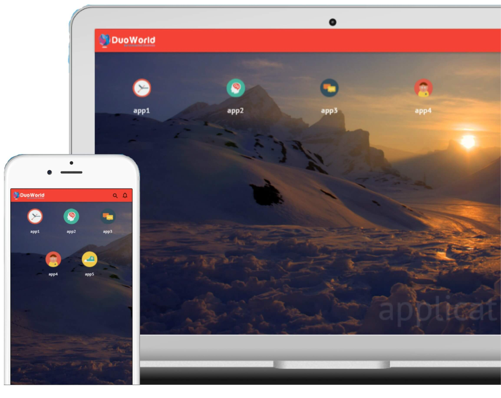

<md-dialog>
    <md-content layout="column" layout-align="center center">
        <div class="intro-image-container" layout="row" layout-align="space-between start">
            <div layout="column" layout-align="space-between start" flex style="min-height: 40vh;margin-left: 30px;">
                <p>customize your shell for a better experience, make it feel home.</p>
                <div layout="row" layout-align="center center">
                    <md-button ng-click="skipShellCustomization($event);">Skip</md-button>
                    <md-button class="md-primary md-raised" ng-click="cancel()">OK, GOt it!</md-button>
                </div>
            </div> </div>
    </md-content>
</md-dialog>
